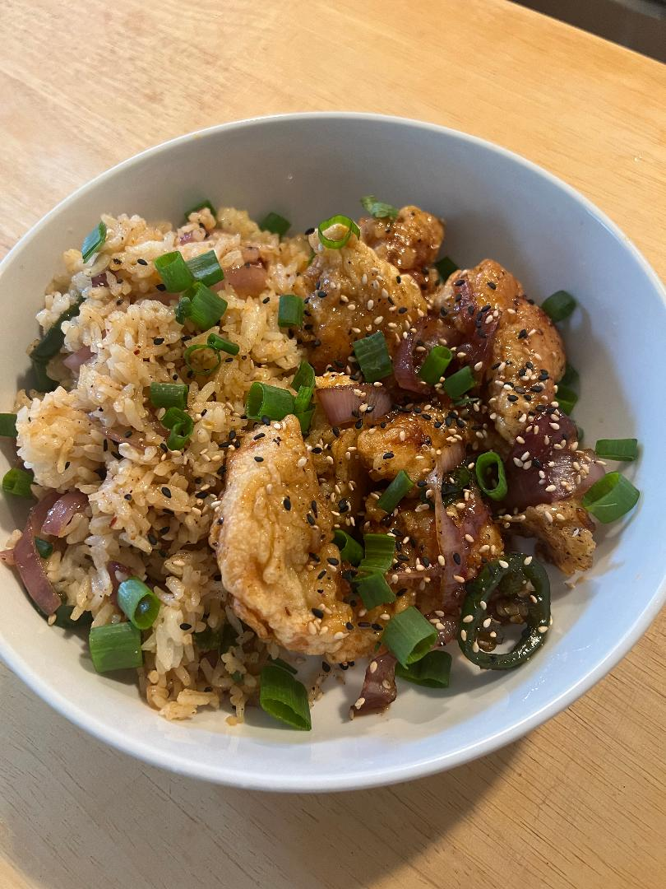

Black Pepper Honey Chicken and Fried Rice

Description
I took some measurements and ingredients from the first time I made a similar dish (heres
the link for a more professional appeal and measurement count, just a different flavor profile ) and have been tweaking my own recipe for a while and this was
just the last one I made to at least get some numbers and values. Tweak it to your own tastes and your own flavor profile. I did state this in the steps down below, but don't go too crazy right away.
I have lost a battle or two due to being too creative or taking on doing too much and it ended up tasting like straight ass. Have fun and enjoy it!
Ingredient List and Tools
Tools to Make Life Easier
- Cast Iron
- Rice Cooker
For Chicken
- 2 qt of oil
- 1 Chicken Breast
- 1/2 tsp of Salt
- Healthy portion of Black Pepper?
- 1 Tbsp minced Garlic
- 1 Egg
- 1 Cup of Potato Starch
- 1 quick faucet splash of Water
For Sauce and Rice
- 1 cup Rice
- 1.5 cups Water
- 3 tbsp chili oil/chili crisp
- Handful of onions
- 3 second hot or regular honey bottle squeeze
- Probably enough black pepper for the day
- Amount of garlic is just an eyeball amount depending on how garlicky you want?
- 1.5 tbsp Soy Sauce NOT HALF SODIUM
- Another egg if you want ?
***notes
I like to sometimes add in sliced Onion and Jalapeno in batter for different flavor and texture, for the sake of this basic recipe we will skip
On step 4 if the ratios are not right, not a HUGE deal. I like to make crispy fried pancakes with the excess (amazing if you do add the onions and jalapenos) if it takes a couple water and/or potato starch additions
Start your rice at least 10 minutes before you start to heat your oil.
I also prefer the egg for the rice, I never did add it until I did and oh it's just an egg.. that egg is a great egg just trust me.
Steps
- Start cooking rice in rice cooker (please tell me you have one of these by now)
- Add oil of your choosing (personally used vegetable) to skillet on medium to high depending on stove and burner settings. These next steps you may want to work through pretty quick so the oil does not get too hot. If you work slow, no worries (I do too), turn to a smooth uhh 4.5 - 5 .
- Cut up chicken to bite size pieces or whatever size you personally want them to be just be wary of cooking time differences.
- Add the chicken to a medium size mixing bowl followed by, the salt, black pepper, potato starch, and egg.
- Splash a bit of that H2O in there and mix. If you mix it all together and u can lift up the bowl as a solid, add another splash and mix again. On the other end, if you mix again and it is too wet (you'll hopefully know if it is) add potato starch, add around an 1/8 cup or less at a time.
- Test the oilwith a wooden chopstick or any wooden spoon handle. The oil should bubble around the tip of the inserted object.
- I use my hand to lay the pieces in there but if it is bubbling or too hot, grab your handy tongs and pick and place the chicken in the oil making sure to do it AWAY from your hands.
- Rice should be finished or finishing up. If not Idk what you are up to but if not proceed to next step and just add it to freezer when done, making sure if you have a removable bin like I do, to put a mit underneath when you put it away.
- You may not be able to fit all in the first round, no problem, time for a rough 4-5 minutes. Place second round again making sure to not drop them directly, and away from you. The first round i usually have a bowl with paper towels to soak up oil while they rest for a little. I typically only have 2 rounds lol so easy rotation.
- TIP TO CRISPY IS ALL IN THE SECOND FRY. Before you put the first batch back in, smack that shit with the side of a handheld strainer or the tongs you may be using, it creates little air pockets in there. Then proceed with frying for the second time for a rough 2-3 minutes and refer to next step as you start that while continuing cooking the chicken all for efficiency because its "Chopped" and were on a time-crunch.
- Now, start your sauce by adding the chili oil, onions, and garlic on medium for 2 minutes. Then proceed to add the hot/regular honey, soy sauce, black pepper. Turn heat down slowly as you stir
- Taste, taste, taste and add what you would like to add your own twist, but do not go too hog wild or I will not be able to help you. Regardless once it is to your liking and thickness (if it is too thin put a light spoonful of cornstarch in enough water to form a loose paste and add it to the sauce while still over heat to thicken)
- Add loose ratios of honey and water (mainly favoring the honey such as 3:1) to add more volume going forward. Make sure now to take a decent bit of the sauce and put it on the side for chicken. By now you are probably starving and taken some bites with dipping the chicken in the sauce.. if not **** you
- Fry that rice, dump it in the remaining sauce and let sit and brown and get crispy as you stir it all together for another rough 2 minutes and make sure you are checking your chicken. Please, you do you want it to be bone dry.
- Beat an egg in a separate cup, make a pit in the rice (almost like you are making bread), and add the egg. Stir it all together and mix it up and try some while its cooking. I know it probably looks good asl. No shame just make sure the egg is cooked. No raw yolk around here please.
- Around now, you should be finishing up everything, and you should have been tasting along the way. Grab a plate or bowl, or a blate if you have it for the round aesthetics, and plate the rice.
- Dump the remaining sauce you SHOULD HAVE set aside back in the pan and start putting the chicken in there. Toss it around..... or stir. Whatever you want to do works I guess, but tossing is more fun.
- Now, just time for plating the chicken. Well go ahead and lay them out to take a picture or just dump em on there and go eat. Optional:Add sesame seeds and green onions to your dish for texture and flavor and again.. for aesthetics.